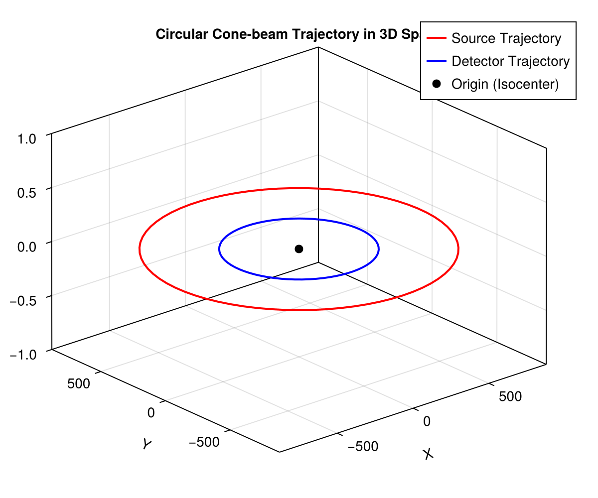
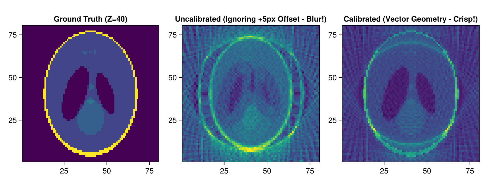

Tutorial 5: 3D Geometries and cone_vec (Generic Vector Geometries)
Arbitrary Source/Detector Trajectories, Geometric Alignment Calibration, and 3D Visualizations.
Prerequisites
This tutorial uses Makie (recommended backend: CairoMakie) for visualization. If CairoMakie is not installed in your environment, add it by running using Pkg; Pkg.add("CairoMakie").
1. Introduction
In standard circular cone-beam CT, trajectories are assumed to be a perfect planar circle perpendicular to the rotation axis. In physical scanners, however, various geometric misalignments occur:
- Center of Rotation (COR) offset
- Detector tilts (yaw, pitch, roll)
- Non-circular or helical trajectories
ASTRA's Vector Geometry (ConeVec3DGeometry) specifies the exact position and orientation of the source and detector for every projection angle using a 12-element vector: $\mathbf{v} = [s_x, s_y, s_z, d_x, d_y, d_z, u_x, u_y, u_z, v_x, v_y, v_z]$
Topics covered in this notebook:
- Converting circular geometry to vector geometry via
geom_2vec. - 3D spatial visualization of source/detector scanning trajectories with Makie.
- Simulating detector alignment errors (offsets).
- Reconstruction with uncalibrated vs. calibrated vector geometries.
2. Package Loading and Environment Setup
using AstraToolbox
using CairoMakie
println("Has CUDA available: ", has_cuda())3. Vector Geometry Structure and geom_2vec
We create a circular cone-beam geometry and convert it into a generic vector geometry using geom_2vec.
# Create circular cone-beam geometry
num_angles = 72
angles = Float32.(range(0, 2pi, length = num_angles))
det_u, det_v = 100, 100
sod, odd = 800.0f0, 400.0f0
circular_geom = Cone3DGeometry(
angles, det_u, det_v, sod, odd;
detector_spacing_u = 1.0f0, detector_spacing_v = 1.0f0
)
# Convert to vector geometry (12 parameters per angle)
cone_vec = geom_2vec(circular_geom)
println("Vector geometry matrix shape: ", size(cone_vec.vectors))4. 3D Spatial Visualization of Scanning Trajectory in Makie
Plot the 3D coordinates of the X-ray source and the detector center in physical space.
src_x = cone_vec.vectors[1, :]
src_y = cone_vec.vectors[2, :]
src_z = cone_vec.vectors[3, :]
det_x = cone_vec.vectors[4, :]
det_y = cone_vec.vectors[5, :]
det_z = cone_vec.vectors[6, :]
fig = Figure(size = (600, 500))
ax = Axis3(fig[1, 1], title = "Circular Cone-beam Trajectory in 3D Space",
xlabel = "X", ylabel = "Y", zlabel = "Z")
lines!(ax, src_x, src_y, src_z, color = :red, linewidth = 2, label = "Source Trajectory")
lines!(ax, det_x, det_y, det_z, color = :blue, linewidth = 2, label = "Detector Trajectory")
scatter!(ax, [0.0], [0.0], [0.0], color = :black, markersize = 12, label = "Origin (Isocenter)")
axislegend(ax)
fig
5. Simulating Alignment Errors (Detector Offset)
We introduce an uncalibrated detector shift (+5 pixels) to simulate mechanical misalignment. Using geom_postalignment, we generate a calibrated vector geometry that explicitly accounts for this offset.
# Apply a detector shift (+5 pixels)
shift_u = 5.0f0
shift_v = 0.0f0
cone_vec_shifted = geom_postalignment(cone_vec, (shift_u, shift_v))
println("Successfully created misaligned/calibrated vector geometry!")6. Reconstruction: Uncalibrated vs. Calibrated Geometry
Reconstruct the phantom:
- With uncalibrated geometry: severe double-edge artifacts and loss of resolution.
- With calibrated vector geometry: sharp, artifact-free reconstruction.
nx, ny, nz = 80, 80, 80
phantom = shepp_logan_3d(nx)
if has_cuda()
# Project with the shifted geometry (simulating real acquisition)
sino_shifted = project(phantom, cone_vec_shifted; backend = cuda())
# 1. Uncalibrated reconstruction (assuming standard circular geometry)
rec_uncalibrated = reconstruct(sino_shifted, circular_geom, FDK3DMethod(); volume_size = (nx, ny, nz), backend = cuda())
# 2. Calibrated reconstruction (using exact vector geometry)
rec_calibrated = reconstruct(sino_shifted, cone_vec_shifted, FDK3DMethod(); volume_size = (nx, ny, nz), backend = cuda())
mid_z = nz ÷ 2
fig = Figure(size = (900, 350))
ax1 = Axis(fig[1, 1], title = "Ground Truth (Z=$mid_z)", aspect = DataAspect())
heatmap!(ax1, phantom[:, :, mid_z], colormap = :viridis)
ax2 = Axis(fig[1, 2], title = "Uncalibrated (Ignoring +5px Offset - Blur!)", aspect = DataAspect())
heatmap!(ax2, rec_uncalibrated[:, :, mid_z], colormap = :viridis)
ax3 = Axis(fig[1, 3], title = "Calibrated (Vector Geometry - Crisp!)", aspect = DataAspect())
heatmap!(ax3, rec_calibrated[:, :, mid_z], colormap = :viridis)
fig
else
println("CUDA is not available. Skipping 3D reconstruction.")
end